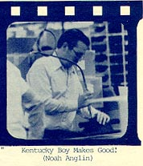
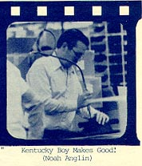
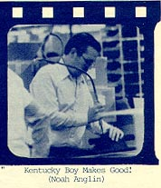

As Christmas time grew nearer, the demand for Atari's comsumer games got
louder and louder (as is traditional). To help hush the toe-tapping
buyers, several of Atari's supervisors, managers and other exempt employees
from all divisions and walks of life pulled together.
They worked 8-hour shifts in addition to their regular jobs, to help produce
enough games to meet the demanding obligations. After a week of 12-to-16
hour work days... here's a look at our dedicated lifers:

Even Nolan himself was hard at work on the assembly line along with his
fellow employee's. You didn't see this kind of work ethic and
spirit in the later years of Atari.